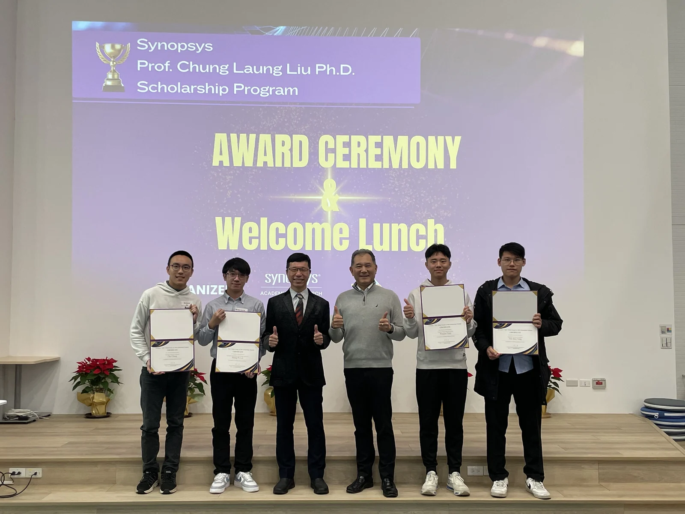
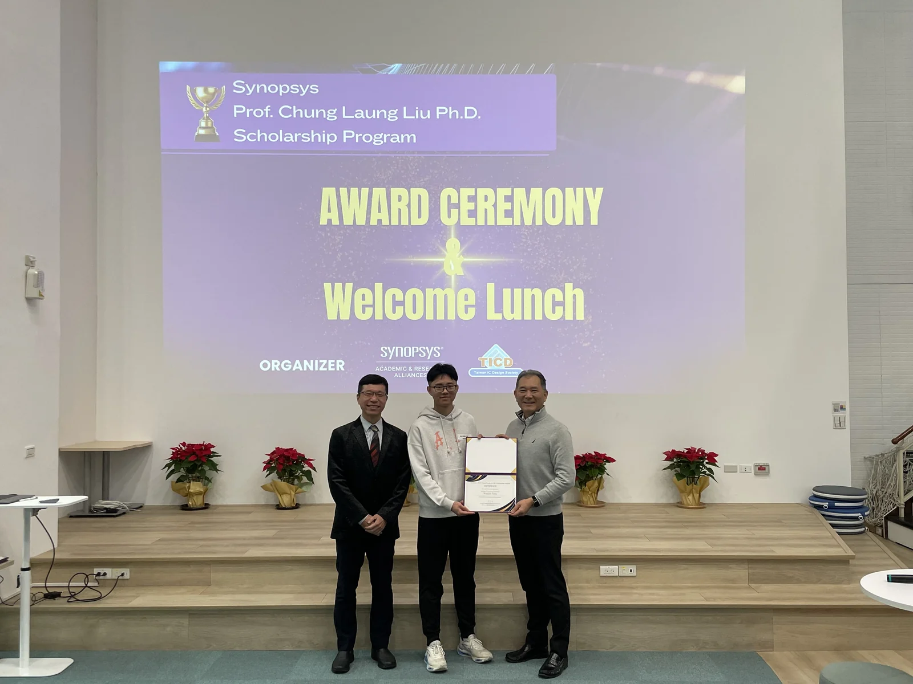

Awards & Honors · Sep 2024–
Present
Synopsys – Prof. Chung Laung Liu Ph.D. Scholarship
Synopsys Taiwan & Taiwan IC Design Society
Certificates1

Photos3





Awards & Honors · Sep 2024–
Present
Synopsys Taiwan & Taiwan IC Design Society

